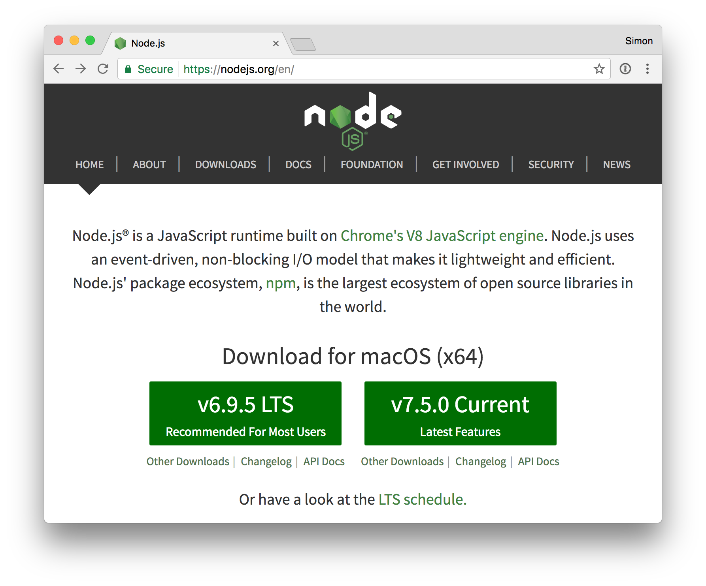

# Node.js Introduction This material is used in [COMEM+](http://www.heig-vd.ch/comem) [web development courses](https://github.com/MediaComem/comem-webdev). --- class: center, middle ## What is [Node.js][node]? .breadcrumbs[<a href="#1">Node.js Introduction</a>] > "Node.js is an **asynchronous JavaScript runtime** built on Chrome's V8 JavaScript engine. > Node.js uses an **event-driven**, **non-blocking I/O** model that makes it lightweight and efficient." --- ### Installation .breadcrumbs[<a href="#1">Node.js Introduction</a> > <a href="#2">What is [Node.js][node]?</a>] <p class='center'></p> --- ### Which Node.js version to choose? .breadcrumbs[<a href="#1">Node.js Introduction</a> > <a href="#2">What is [Node.js][node]?</a>] <p class='center'><img src='images/lts-schedule.png' width='80%' /></p> * Odd-numbered versions (e.g. v5, v7) are **unstable** releases with the latest features, and will **no longer be supported after 6-9 months**. * Even-numbered versions (e.g. v4, v6) have **long term support (LTS)**. They are actively developed for 6 months. They are supported for 18 months after that. They are still maintained (e.g. security fixes) for 12 months after that. So they are **supported for 36 months**. --- class: center, middle ## Synchronous vs. Asynchronous .breadcrumbs[<a href="#1">Node.js Introduction</a>] --- ### Synchronous code .breadcrumbs[<a href="#1">Node.js Introduction</a> > <a href="#5">Synchronous vs. Asynchronous</a>] Basic JavaScript code is synchronous. It means that only one command or function can be executed at a time. ```js function getRandomNumber() { return Math.random(); } console.log('Hello'); var result = getRandomNumber(); console.log('Result: ' + result); console.log('End of program'); ``` Code executes **sequentially**: ```txt Hello Result: 0.12438 End of program ``` The call to `getRandomNumber()` blocks the thread until its execution is complete. --- ### Asynchronous code .breadcrumbs[<a href="#1">Node.js Introduction</a> > <a href="#5">Synchronous vs. Asynchronous</a>] With asynchronous code, some operations are executed **in parallel**. ```js var fs = require('fs'); console.log('Hello'); fs.readFile('random.txt', 'utf-8', function(err, result) { console.log('Result: ' + result); console.log('Done'); }); console.log('End of program'); ``` Code execution is **not sequential**: ```txt Hello End of program Result: 0.581 Done ``` How does this work? --- ### Non-blocking I/O .breadcrumbs[<a href="#1">Node.js Introduction</a> > <a href="#5">Synchronous vs. Asynchronous</a>] The signature of `fs.readFile` is: ``` fs.readFile(file[, options], callback) ``` The third argument is a **callback function**: * With synchronous code, the call blocks the thread until it is done. * With asynchronous code, the rest of the code keeps executing, and `fs.readFile` will **call you back** when it is done. Under the hood, Node.js will read the file in a separate thread, then execute your callback function when it's ready. --- ### Your Node.js code is single-threaded .breadcrumbs[<a href="#1">Node.js Introduction</a> > <a href="#5">Synchronous vs. Asynchronous</a>] Although I/O operations are non-blocking, **your code always executes in a single thread**: ```js var value = 1; fs.readFile('five.txt', 'utf-8', function(err, result) { value = value + parseFloat(result); }); value = value * 2; console.log(value); ``` This will always log **7** (i.e. (1 * 2) + 5). Even if the file is read instantaneously and the contents of the file is ready immediately, Node.js **guarantees** that `value = value * 2` will be executed first. Callback functions will always wait for the blocking code to finish executing. --- ### The event loop .breadcrumbs[<a href="#1">Node.js Introduction</a> > <a href="#5">Synchronous vs. Asynchronous</a>] This is the mechanism that enables the behavior in the previous slides: <img src='images/event-loop.png' width='100%' /> ??? * Event loop: * Run the initial script (which will register callbacks) * Get the next event in the queue * Invoke the registered callbacks in sequence * Delegate I/O operations to the Node platform (in separate, non-blocking threads) --- ### Other event-driven, non-blocking I/O architectures .breadcrumbs[<a href="#1">Node.js Introduction</a> > <a href="#5">Synchronous vs. Asynchronous</a>] Similar mechanisms are used in other frameworks and tools: * JavaScript running in the browser also runs on an event loop * [Event Machine][event-machine] (Ruby event-processing library) * [nginx][nginx] (web server written in C with an event-driven architecture) * [Twisted][twisted] (Python event-driven networking engine) --- ## Node.js callback convention .breadcrumbs[<a href="#1">Node.js Introduction</a>] Node.js callback functions usually have this signature: ``` function(err, result) ``` There are two ways that the function can be called back: 1. The operation **failed**: * `err` contains an error describing the problem * `result` is `null` or `undefined` 2. The operation **succeeded**: * `err` is `null` or `undefined` * `result` contains the result of the operation --- ### **Always** check for errors .breadcrumbs[<a href="#1">Node.js Introduction</a> > <a href="#12">Node.js callback convention</a>] You should never forget to check for errors: ```js fs.readFile('name.txt', 'utf-8', function(err, data) { * if (err) { * console.warn('Oops, could not read the file because: ' + err.message); * return; * } console.log('Hello ' + data); }); ``` If you forget to check `err`, this code could log `Hello undefined` if the operation fails (e.g. the file doesn't exist, is corrupt, etc). Do not forget the `return` either, or use `else`, to ensure that your "success" code is not run when an error occurs. --- class: center, middle ## Node.js core modules .breadcrumbs[<a href="#1">Node.js Introduction</a>] --- ### Node.js has many modules out of the box .breadcrumbs[<a href="#1">Node.js Introduction</a> > <a href="#14">Node.js core modules</a>] .grid-30[ * Assertion Testing * Buffer * C/C++ Addons * **Child Processes** * Cluster * Command Line Options * Console * **Crypto** * Debugger * DNS * Domain * Errors ] .grid-30[ * **Events** * **File System** * Globals * **HTTP** * **HTTPS** * Modules * Net * OS * **Path** * **Process** * Punycode * Query Strings ] .grid-30[ * Readline * REPL * Stream * String Decoder * Timers * TLS/SSL * TTY * UDP/Datagram * URL * Utilities * V8 * VM * ZLIB ] --- ### The HTTP module .breadcrumbs[<a href="#1">Node.js Introduction</a> > <a href="#14">Node.js core modules</a>] Node.js provides a ready-to-use HTTP server. Thanks to the event loop, this one small server can handle many clients concurrently. ```js // Require the HTTP module. const http = require('http'); // Define configuration properties. const hostname = '127.0.0.1'; const port = 3000; // Create an HTTP server that will respond to // all requests with "Hello World" in plain text. const server = http.createServer(function(req, res) { res.statusCode = 200; res.setHeader('Content-Type', 'text/plain'); res.end('Hello World\n'); }); // Run the server on the configured host and port. // Register a callback function to be notified when // the server has started successfully. server.listen(port, hostname, function() { console.log('Server running at http://' + hostname + ':' + port + '/'); }); ``` --- ### Event emitters .breadcrumbs[<a href="#1">Node.js Introduction</a> > <a href="#14">Node.js core modules</a>] Many Node.js objects are [event emitters][node-event-emitter]. You can register callback functions to **react** to these events: .grid-30[ <img src='images/http-events.png' width='100%' /> ] .grid-70[ ```js server.on('connection', function(socket) { console.log(socket.remoteAddress + ' connected'); }); server.on('request', function(message) { console.log(message.url + ' requested'); }); ``` ] --- class: center, middle ## Modularizing .breadcrumbs[<a href="#1">Node.js Introduction</a>] --- ### Writing Node.js modules .breadcrumbs[<a href="#1">Node.js Introduction</a> > <a href="#18">Modularizing</a>] TODO: adapt (content copy-pasted from previous course's slides) m1.js ```js module.exports.a = "b"; module.exports.hello = function() { console.log("Hello!"); }; ``` m2.js ```js module.exports = function(name) { console.log("Hello " + name + "!"); }; ``` myScript.js ```js var module1 = require("./m1"); console.log(module1.a); module1.hello(); var module2 = require("./m2"); module2("World"); ``` Run it! ```js $> node myScript.js b Hello! Hello World! ``` --- ## Resources .breadcrumbs[<a href="#1">Node.js Introduction</a>] * Understanding the Node.js Event Loop http://strongloop.com/strongblog/node-js-event-loop/ * Mixu's Node book: What is Node.js? (chapter 2) http://book.mixu.net/node/ch2.html * Node.js Explained, video http://kunkle.org/talks/ [event-machine]: http://rubyeventmachine.com [nginx]: https://www.nginx.com [node]: https://nodejs.org/en/ [node-event-emitter]: https://nodejs.org/api/events.html [twisted]: http://twistedmatrix.com/trac/